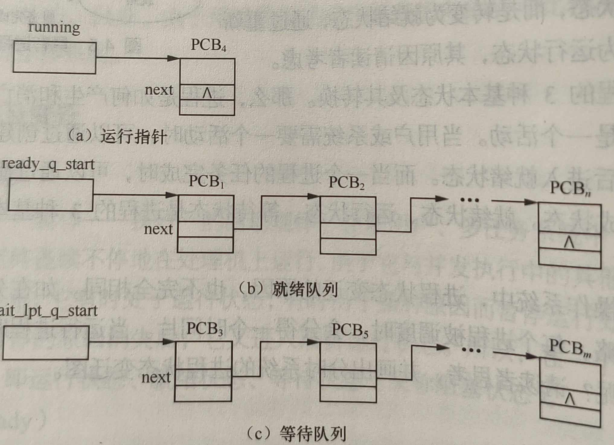

操作系统设计
Cpt1 绪论
并发和并行
并发指同时有多个进程要活动，表示需求的同时到来，而并行指同时有多个进程正在活动，表示需求的同时执行。对于单核CPU而言，并发=并行。对于CPU的每一个核而言，所有进程都是串行执行的。
进程运行图
示例：

Cpt2 操作系统的结构核硬件支持
处理机的态
也叫特权级，表示处于何种状态，正在执行哪类程序，至少有两种态：管态（S）和用户态（U）。管态表示操作系统执行管理程序时的状态，可以使用全部机器指令，所有资源和整个存储区。用户态表示用户程序执行时的状态，禁止使用特权指令，只能访问自己的存储区 。
通过状态寄存器中的系统状态位区分，1位区分两态。用户态下超出权限将发生中断，变为管态处理事件。
特权指令可以：修改机器状态、修改特殊寄存器、涉及外设的输入/输出。
硬件中断
向量中断
中断源自己引导处理机进入中断服务程序的过程叫做向量中断，多见于低端嵌入式系统，检测方式是对于每一个中断类型设置一个中断向量，包含中断处理程序入口和处理器状态字。
中断向量放置于中断向量表里，必须同步更新中断类型、中断处理程序和中断向量表才能添加新的中断。
探询中断
将中断类型分为几个大类（极端情况下就是一类，即中断向量表退化为一个寄存器，存放总中断处理程序入口地址，直接跳转），按照大类设置中断向量表。
软件中断
中断过程中需要保存和恢复现场，将用户态运行的状态（PC，SP，a0-a11等寄存器）存到主存中（trapframe），然后中断退出时从主存中读取状态并恢复。这些行为在中断处理程序进行，属于软件中断的部分。
程序状态字寄存器用户存储目前的执行状况，包含当前指令、执行状况、处理机态、屏蔽中断等内容。
Cpt4 进程及进程管理
并发执行伪代码
$$ \begin{flalign} & \text{S}_0; & \ & \mathbf{cobegin} & \ & \quad \text{S}_1; \text{S}_2; \dots \text{S}n; & \ & \mathbf{coend} & \ & \text{S}{n+1}; & \end{flalign} $$
进程状态
进程最少也需要有三种状态：运行、就绪、等待

进程队列管理
进程原语
原语是原子的系统调用，无法被中断，包括进程创建、撤销、等待和唤醒。
create
{
//申请空PCB结构
if(/*无空PCB结构*/) return /*错误码*/;
//初始化PCB内容
//插入到就绪队列中
return /*新进程pid*/;
}
kill
{
//获取当前进程PCB
//释放资源
//释放PCB块
//进程调度
}
susp(chan)
{
//保存现场到PCB中
//插入到chan的等待队列中
//进程调度
}
wakeup(chan)
{
//找到chan的等待队列
for(/*等待该事件的进程*/)
{
//进程移动到就绪队列
}
}
锁
lock(w)
{
while(w == 1)
{
//保存现场到PCB中
//插入到w的等待队列
//进程调度
}
w = 1;
}
unlock(w)
{
if(/*w的等待队列非空*/)
{
//将等待队首置于就绪队列中
}
w = 0;
}
信号灯
P(s)
{
s--;
if(s < 0)
{
//保存现场到PCB中
//插入到s的等待队列中
//进程调度
}
}
V(s)
{
s++;
if(s <= 0)
{
//将s的等待队首置于就绪队列中
}
}
线程
线程是比进程更加小的概念，是进程执行中的一条路径，共享父进程的主存。

实例
fork()
fork()用于复制子进程，对于父进程返回子进程的pid，对于子进程，返回0。代码段可以被共享，需要分配并复制数据段和堆栈段。
exec()
exec()类函数用于加载一个可执行文件，用于取代当前进程，当前进程的所有原本内容都被废弃。
wait(stat_addr)
wait()函数用于父进程等待任何一个子进程退出，并返回子进程的pid，stat_addr用于获取子进程的退出码。
Cpt5 资源分配与调度
资源描述器/资源信息块

分配策略
FIFO
每次产生的新请求排在队尾，当资源可用时，选取请求队列的队首满足。
优先调度
对每一个进程指定一个优先级，对每一个优先级安排一个就绪队列。请求时，将进程插入到对应的就绪队列中。
移臂调度
在磁盘组中，柱面号决定是磁盘的同心圈中的哪一圈，盘面号决定是哪一个移动臂输出（每一面都有一个移动臂，所有移动臂指向面的同一个点），块号决定是圈中的哪一个点。编址的时候是（柱面号，盘面号，块号），移动成本是柱面>块>盘面。
最短寻道时间优先算法(SSTF)
选择使当前移臂距离最短的请求，主要针对的是不同柱面号的请求调度。
扫描算法(SCAN)
沿着当前臂的移动方向选择里目前柱面最近的柱面，当无候选柱面时，再改变移动方向。
循环扫描算法(CSCAN)
磁头只做单向移动，比如从里向外，当到达最外被访问的柱面时，磁头返回到最里面的待访问柱面。
旋转调度
旋转调度解决的是对于同一的柱面号，如何访问不同的块号，即移动臂选转。旋转调度希望能够选转最少的次数完成访问，因此在插入请求时会先按照块号排序。
死锁
死锁产生的必要四要素是：
- 互斥：资源一次只能由一个进程使用
- 不剥夺：资源只能由占有进程释放
- 部分分配：资源每次申请一部分资源，等待新资源时也占有已有资源
- 循环等待：存在循环链，每一个进程已获得的资源被下一个进程请求
安全状态
按照某种顺序，并发进程都能达到获得全部资源而顺序完成的队列。预防死锁是让每次分配都维持在安全态内，排除死锁是让系统重新回到安全态。
解决方案
- 采用静态资源分配方法预防
- 采用动态分配，有空分配避免
- 检测死锁，设法修复
- 一旦发生就重启系统
有序资源分配法
对于每一类资源分配唯一的号码，在申请时必须按照编号依次申请，即为递增列表，比如1 输入机，2 磁带机，4 打印机。
银行家算法
进程声明了对各类资源的最大需求量，仅当申请者可以在一定时间内无条件地归还申请的全部资源时，才能满足分配。也就是说，哪怕把该进程缺的所有资源分给它，也不会超过系统资源上限，那么才能分配。
Cpt6 处理机调度
作业调度算法性能衡量

| 调度算法 | 调度准则 | 优点 | 缺点 |
|---|---|---|---|
| 先来先服务 | 按作业到达先后顺序 | 算法简单，对长作业有利，实现公平。 | 对短作业不利；平均等待时间较长。 |
| 短作业优先 | 预估服务时间最短的优先 | 平均周转时间最短，系统吞吐量大。 | 对长作业不利；需预知服务时间，难以准确估算。 |
| 高响应比优先 | 响应比 Rp 最高的优先 | 综合考虑了等待和服务时间，平衡了长短作业。 | 每次调度前需重新计算所有作业响应比，增加开销。 |
进程调度
优先数调度算法
采用之前Cpt4的优先调度方式
循环轮转调度
CPU空闲时取就绪队首分配时间片，用完时释放所有权。分为固定时间片和可变时间片，可变时间片根据实际进程数决定时间片长度。
多级反馈队列调度
在优先级就绪队列的基础之上，优先级越低时间片越长。优先级根据进程存在的时间降低，第一次进入调度队列时进入优先级最高的队列，之后每次进入都降低一级。
进程状态变迁图
graph TD
%% 定义节点，使用 ([ ]) 这种胶囊形状模拟原图的椭圆
Running([运行])
LowReady([低优先就绪])
HighReady([高优先就绪])
Blocked([因 I/O 而阻塞])
%% 定义变迁关系与标注
Running -- "超时时间片" --> LowReady
Running -- "请求 I/O" --> Blocked
Blocked -- "I/O 完成" --> HighReady
%% 调度选择线，使用中括号换行保持美观
HighReady -- "首先选择<br/>100 ms" --> Running
LowReady -- "其次选择<br/>500 ms" --> Running
%% 样式美化
style Running fill:#fff,stroke:#333,stroke-width:2px
style LowReady fill:#fff,stroke:#333,stroke-width:1px
style HighReady fill:#fff,stroke:#333,stroke-width:1px
style Blocked fill:#fff,stroke:#333,stroke-width:1px
Cpt7 主存管理
分区存储
分区大小不相等，根据分区进行动态地址映射，一般通过基址寄存器进行。系统会维护一个空闲区队列，表示主存中所有空闲的区，包含分区大小。
| 名称 | 队列排序 | 优点 | 缺点 |
|---|---|---|---|
| 首次适应 | 按地址低地址 到高地址 | 高地址保留了大块空间。 | 导致低地址处留下一堆碎片。 |
| 最佳适应 | 按容量从小到大 | 尽量不浪费大空间。 | 剩下的空间往往太小，无法使用。 |
| 最坏适应 | 按容量从大到小 | 剩下的空间依然很大，足以容纳其他作业，不容易产生碎片。 | 后期无法申请大型空间。 |
页式存储
每个页的大小相等，动态申请动态映射。通过页表进行地址转换，页表项包含虚拟页号和物理页（块）号还有中断位（是否调入主存）。有一个寄存器存储了页表的地址，通过此基址加上虚拟地址中的虚拟页号查找到了物理页号，然后再转化为物理地址。
为了减少查找的耗时，在缓存中使用相联存储器将页表的部分装入，称之为快表，每次先从快表中查找，如果找不到再去页表中找，并将对应的页表项送入快表。
| 算法名称 | 淘汰核心准则 | 硬件支持/数据结构 | 淘汰执行过程 |
|---|---|---|---|
| FIFO | 淘汰进入内存时间最早的页面。 | 队列 ：按调入顺序链接页面。 | 始终淘汰位于队首的页面。新调入页面进入队尾。 |
| LRU | 淘汰距当前时间点最久未被访问的页面。 | 栈或 寄存器：需要硬件记录访问时间戳。 | 每次页面被访问，将其移动至栈顶。淘汰时，直接移除栈底页面。 |
| 近似 LRU | 结合循环扫描与访问标记。 | 循环链表 + 访问位：每个页表项设一访问位。 | 指针循环扫描。若访问位为 1，则将其置 0 并跳过；若访问位为 0，则淘汰该页。 |
段/段页式存储
程序由若干个段组成，由编程时指定。通过段表来完成映射，段表项包括段号，长度和基址。
若加入页式存储，将每个段分为若干个页，那么地址则分为了（段号，页号，偏移）。访问时第一次访问段表，得到段对应的页表，之后就和页式存储的访问逻辑一致了。此时的段表项包含段号、页表长度（页表项数目）、页表始地址。
Cpt8 设备管理
设备的独立性
使用逻辑设备名来使用设备而不是物理设备名，由操作系统指派和检测。
缓冲
为了解决CPU的高速和I/O设备的低速不一致的问题，可以通过缓冲技术来解决。一般采用软件缓冲，在主存中分配一部分空间用于暂时的存储数据。
在请求读的时候，首先分配一个空的缓冲区，然后将数据输入到缓冲区中。当需要使用的时候，从缓冲区中提取。只有当缓冲区为空的时候有需要从中获取信息的时候，才需要等待。
在请求写的时候，首先分配一个空缓冲区，然后将数据输入到缓冲区，当缓冲区装满的时候，数据被输送到I/O设备上，并清空缓冲区。只有当缓冲区未空有需要向其中写入时，才需要等待。
输入/输出控制
通信的方式可以通过特殊的I/O指令，也可以通过主存地址映射。
| 控制方式 | 交换单位 | 控制逻辑与工作原理 | 中央处理器干预程度 | 优点 | 缺点 |
|---|---|---|---|---|---|
| 程序循环测试 | 字或字节 | 中央处理器通过程序指令不断读取设备控制器状态位。若设备未就绪，则中央处理器处于忙等状态。 | 极高：中央处理器完全受限于外部设备速度，全程参与状态查询。 | 硬件结构简单，不需要额外的控制逻辑。 | 资源利用率极低，中央处理器与外设无法并行工作。 |
| 中断驱动 | 字或字节 | 当外部设备准备就绪后向中央处理器发出中断请求，处理器保护现场并转入中断服务程序处理数据。 | 较高：仅在数据准备就绪时干预，但高频中断仍会占用大量处理时间。 | 实现了中央处理器与外部设备的并行工作。 | 处理大量数据时频繁产生中断，系统开销显著。 |
| 直接存储器存取 | 数据块 | 由专用控制器控制内存与外设直接交换数据，数据流不经过中央处理器寄存器。 | 中等：仅在数据块传输的起始时刻和结束时刻进行干预。 | 大幅提升了数据块传输效率，减轻了中央处理器的计算负担。 | 硬件结构较复杂，每个控制器通常仅能管理极少量设备。 |
| 字节多路通道 | 字节 | 通道在多个低速设备间通过时间片轮转实现分时并行，每次轮流传输一个字节。 | 极低：中央处理器仅发出启动指令，后续由通道程序自主控制。 | 可连接大量低速设备，并在逻辑上实现多设备同时运行。 | 传输效率受限于字节级交换，不适合连接高速外部设备。 |
| 选择通道 | 数据块 | 通道在一段时间内被一个高速设备独占，实现内存与外设间连续的数据块传输。 | 极低：中央处理器仅负责任务的初始调度与最终完成确认。 | 能够支持极高的数据传输速率，满足高速设备需求。 | 资源利用率不均，通道被独占时其他设备必须挂起等待。 |
| 数组多路通道 | 数据块 | 在多个高速设备间轮流分时传输数据块，利用设备寻址的时间空隙进行链路切换。 | 极低：中央处理器与通道之间实现了高度的独立性与并行性。 | 兼具高速传输能力与多设备并发能力，系统整体吞吐量最高。 | 硬件控制逻辑最为精密复杂，系统构建成本最高。 |
Cpt9 文件系统
逻辑记录和物理记录
文件是具有符号名的数据/记录的集合，逻辑文件是用户看到的文件视图，物理文件是信息在物理存储器上的存储方式。
逻辑记录是文件按信息在逻辑上独立划分的单位，被视为一组连续的记录的集合。
物理记录时连续信息所组成的一个区域，称为块，是数据交换的基本单位。
逻辑结构
一般采用流式文件，是相关的有序字符的合集，文件长度就是所含字符数。流式文件无结构，可以直接建立映射。顺序存取和随机存取就是顺序访问和随机访问文件的内容。
物理结构
将每一个磁道分为多个扇区（块），就是数据交换的最小单位。
连续文件
文件放置的连续的块上，在文件目录中只需要存储文件第一个逻辑记录（第一个逻辑块）所在的磁盘块号和文件占用块大小即可。连续文件存取快，但是长度不易改变，适用于顺序访问。
串联文件
每个物理块的最后一个（或第一个）字作为链接字，表示文件后继块的块号。而文件目录中只需要存储文件的首块号，块可以随机分布而不用连续存储。串联文件不适合随机存取，比较适合于顺序存取。
也可以将链接表单独拿出来不放到块中，形成文件映照图。
索引文件
仿照页表，采用文件索引表的形式对文件占用的块进行映射，文件目录中存储的是索引表的指针，而索引表项包含逻辑块号和物理块号。同时支持多级索引表，就像多级页表一样。
存储空间管理
使用类似主存管理的方式，有空闲文件目录（空闲块号，空闲块个数）、空闲块链（下一个空闲块号）、位视图。
文件目录
一般采用多级文件目录来处理重名和复杂结构，每一级目录都可以对应一个目录文件，而信息文件一定在树叶上。目录和文件一样，都具有唯一id和标识符。
文件共享
存取权限及其验证
权限分为：
- E 允许执行但不能读
- R 允许读
- U 允许修改
- W 允许修改和添加新内容
- D 允许删除
- C 允许修改文件属性，为文件拥有者所有
| 安全机制 | 实现方式 | 优点 | 缺点 |
|---|---|---|---|
| 访问控制矩阵 | 使用二维矩阵表示。行代表用户，列代表文件。交叉单元格记录该主体对该客体拥有的权限。 | 概念直观、逻辑清晰。能够完整地描述系统中所有主体与客体之间的权限关系。 | 在大型系统中，矩阵通常极度稀疏，导致存储空间极大浪费；维护与动态修改效率低下。 |
| 存取控制表 | 以文件为中心。为每个资源关联一个列表，记录所有允许访问该资源的用户及其对应的权限。 | 易于查阅和管理特定资源的访问情况。在删除资源时，关联的控制表可以一并销毁，管理便捷。 | 难以快速查询特定主体拥有的所有权限。当用户数量庞大时，列表可能变得过长。 |
| 用户权限表 | 以用户为中心。为每个用户关联一个权限清单，记录该用户被授权访问的所有资源及其操作权限。 | 易于查询和管理特定主体的权限集合。在用户离职或权限变更时，只需修改该用户对应的权限表即可，安全性响应快。 | 难以确定特定资源的授权分布情况。在回收某个特定资源的权限时，需遍历所有用户的权限表。 |
| 口令和密码 | 通过用户持有的私密信息进行身份鉴别。系统通常存储口令的单向哈希值，在登录时进行匹配比对。 | 实现成本极低，用户接受度高，是系统进入的第一道防线。不需要复杂的硬件支持。 | 存在弱口令风险，极易受到社会工程学、字典攻击或暴力破解。若存储文件被泄露且未加密处理，会导致大规模身份被冒用。 |
查找加速
可以使用建立当前目录（cwd）和链接技术来快速的访问。其中链接技术就是向文件树里面添加对于其他的目录表项的链接，类似于快捷方式。因此需要维护“连访属性”（指向文件还是目录表项）和“引用计数”，只用没有人引用了才能真正删除文件。
在Linux中，硬链接会添加一个实际的索引节点，指向被链接的文件，多个目录表项可以指向一个文件。